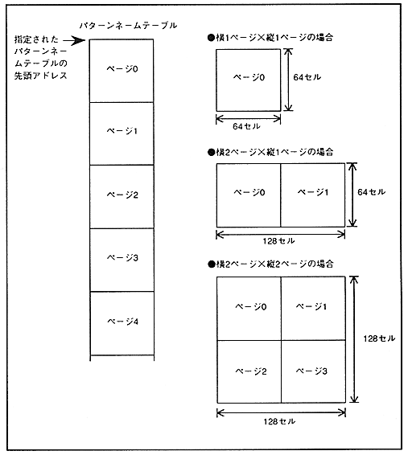

If a plane consists of multiple pattern name tables (pages), store the pattern name table used for one plane in VRAM continuously. Figure 4.13 shows the relationship between the pattern name table layout and the pattern name table depending on the plane size (number of plain pages).
Figure 4.13 Pattern name table layout by plain size
